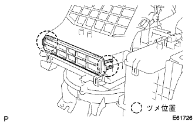
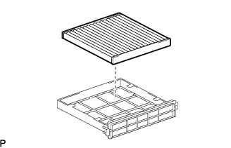
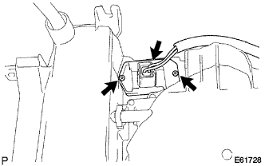
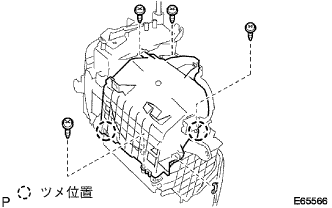
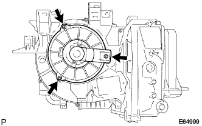
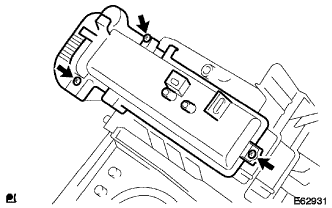

|
Cut the connector.
Remove the three screws and remove the damper servo.
Air Conditioner Brois ASSY degradation |
| 1. Damp servo SUB-ASSY No.1 removal removed (A/C auto except for the cold district specification car) |
|
Cut the connector.
Remove the three screws and remove the damper servo.
| 2. Remove the air filter case |
|  |
Remove the claws and remove the airfil tatas.
| 3. Remove the clean air filter |
|  |
Remove the clean air filter from the air filter case.
| 4. Remove the blower register (A / C manual) |
|  |
Cut the connector.
Remove the two screws and remove the blower register.
| 5. |
 |
Cut the connector.
Remove the two screws and remove the Blow Verie Statransista ASSY.
| 6. Remove the blower motor cover (cold district specification car) |
 |
As shown in the figure, the rod is separated from the blower motor cover.
|  |
Remove the four screws and the holding spring, and remove the blower motor cover.
| 7. Remove the blower motor (with fan) |
 |
Cut the connector and remove the No. 1 cool wiring.
|  |
Remove the three screws and remove the blower motor (with fan).
| 8. Cooler thermista No.1 |
 |
Remove the claws and remove the Cooler Thermista No.1 from the blower case.
| 9. Remove the cooler expansion valve |
 |
Use a two -sided width 4mm hexagon wrench, remove the two hexagon bolts and remove the cool expan syon valve.
| 10. Cooler Evaporator No.1 removed (no cold region) |
 |
Remove the eight screws and remove the cooling units.
Take out the No. 1 cooling units from the cooling units.
 |
Remove the two O -rings from the Cooler Evaporator No.1.
| 11. Cooler Evaporator No.1 Remove (cold district specification car) |
 |
Remove two screws and claws and remove the air duct Association.
|  |
Remove the three screws and remove the evaporator cover.
Remove the No. 1 Cooling Unito case.
|
Remove the two O -rings from the Cooler Evaporator No.1.